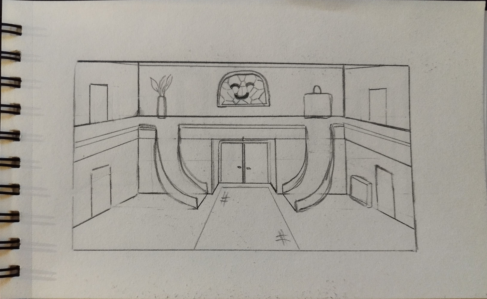
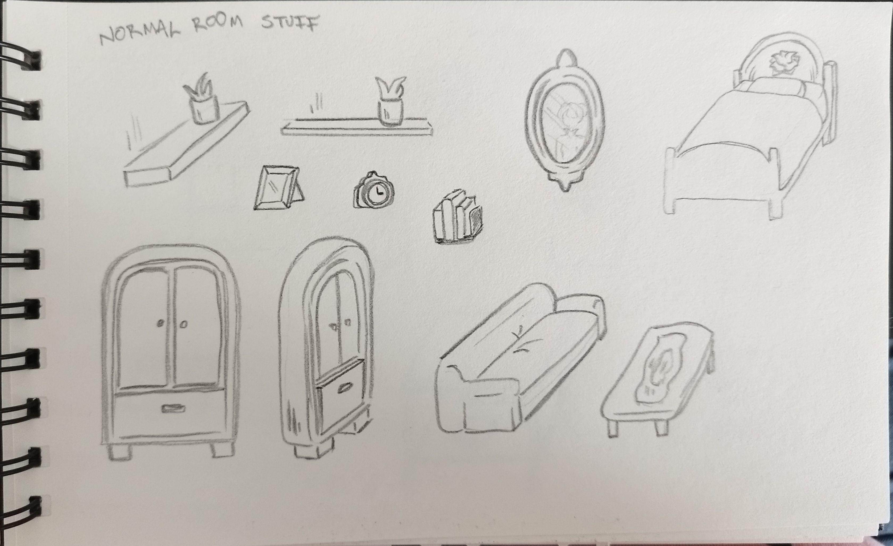
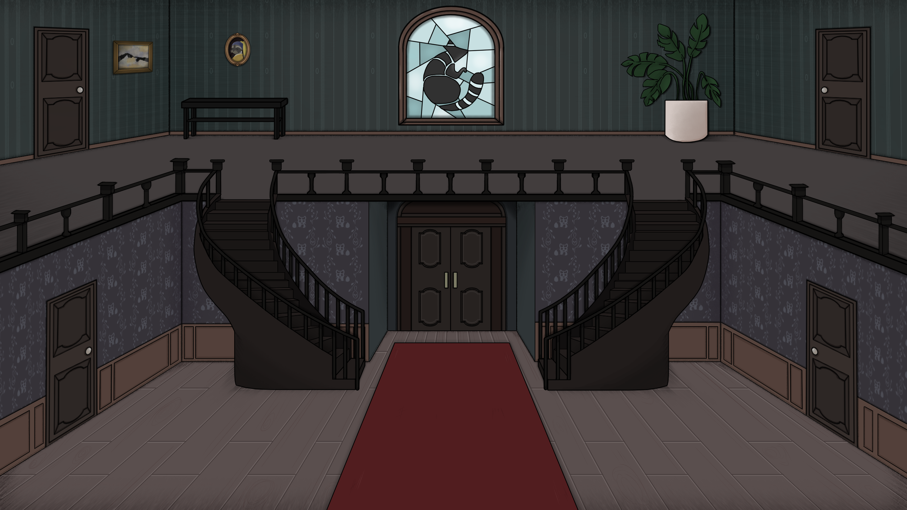
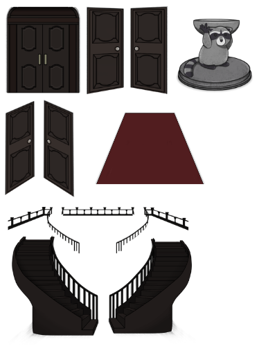
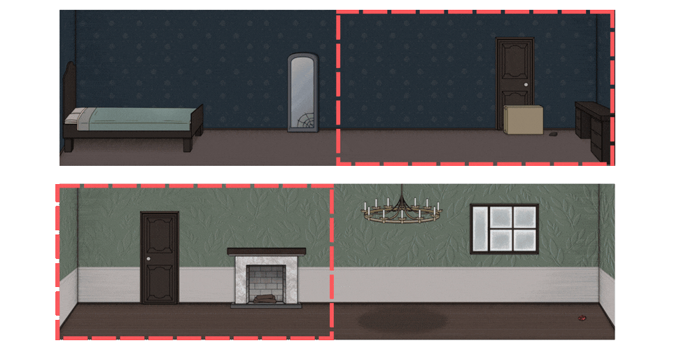
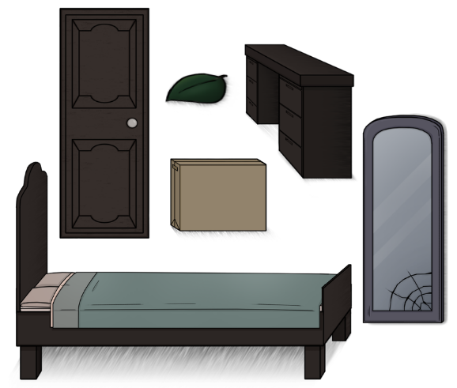
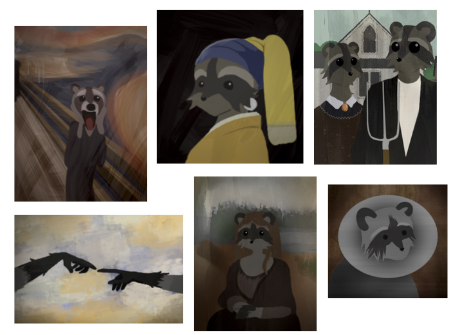

Backgrounds




Backgrounds are made usually in a hallway ratio. Only exception is the main lobby area, where the character comes and goes. Reason for this is that we decided to change the aspect ratio of
the rooms at early on production.
The backgrounds have few parts; big sprite for the room all together and object sprites and they are for the character to move in 2,5D.



Camera follows character in hallway aspect ratio rooms.
"1st room" bedroom is the tutorial room where the character starts. From there character goes to lobby area, where there are doors leading to other rooms.
Different rooms have different mechanics to learn and objectives to achieve.